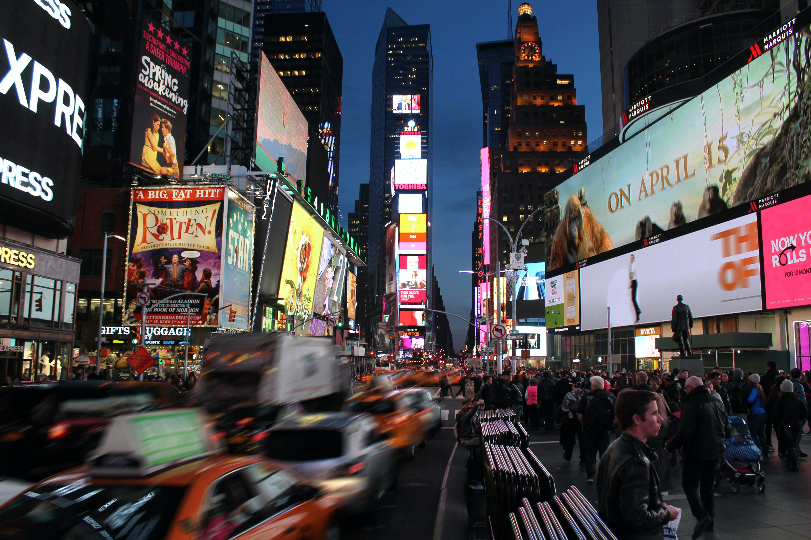
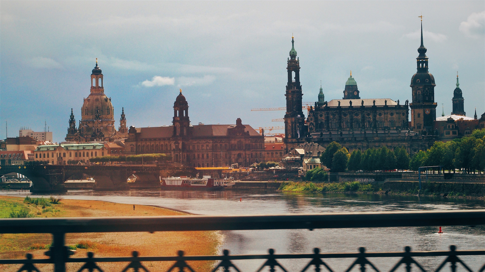
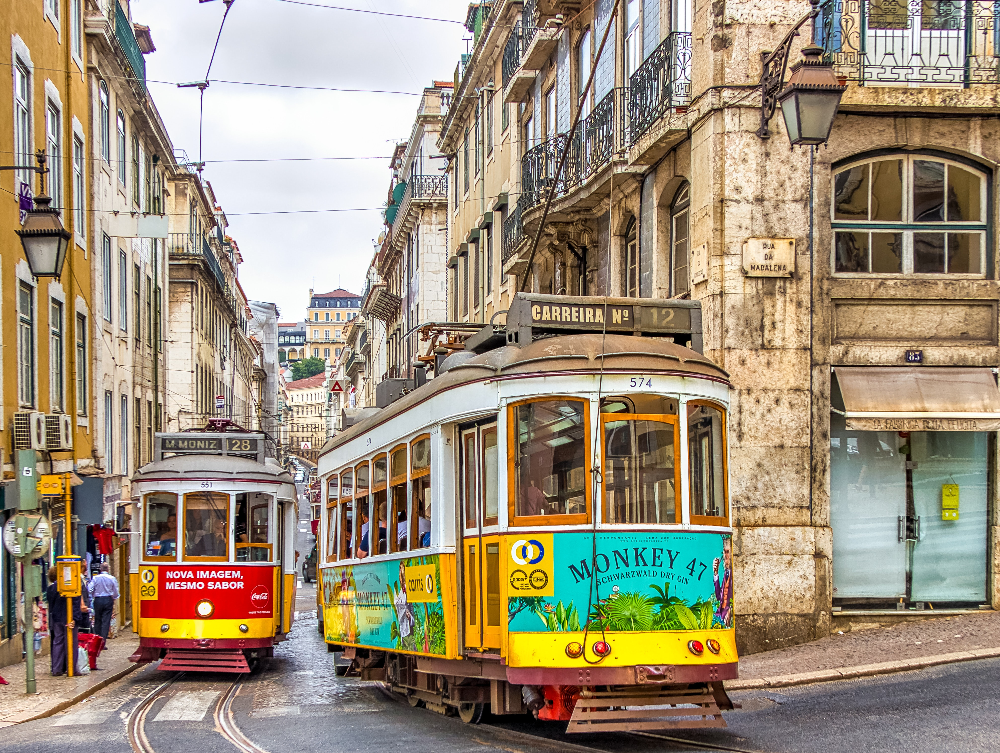

15 de Abril de 1998
Rio de Janeiro
Cidade maravilhosa, onde tive o privilégio de nascer e crescer.
Abençoada por suas praias, pelo seu carnaval, por suas pessoas cativantes e paisagens de tirar o fôlego.
20 de Março de 2012
Nova Iorque

A famosa cidade que não dorme. Uma das minhas cidades preferidas.
Famosa pelas suas pizzas, seus taxis amarelos por todo lado, pela moda, pela mistura de culturas e claro, a cidade da minha série preferida - Friends.
1 de Maio de 2016
Dresden

Ah, Alemanha... ah, Dresden... Cidade apaixonante em cada detalhe.
Cidade onde me joguei pela primeira vez no mundo e conquistei a minha independência, aprendi e errei e aprendi que a Alemanha não é apenas um país frio.
14 de Fevereiro de 2022
Lisboa

Lisboa... cidade colorida, do sol, da luz, do fado e dos pasteis de nata.
Impossível não morrer de amores pelos seus bondinhos, cafés e vistas. Impossível também não perder o fôlego em cada subida pelas suas ruas.